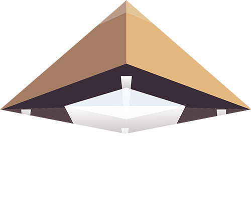

• SCROLL TO START •
•ORION•



The Orion correlation theory is a hypothesis in alternative Egyptology. Its central claim is that there is a correlation between the location of the three largest pyramids of the Giza pyramid complex and Orion's Belt of the constellation Orion, and that this correlation was intended as such by the builders of the pyramids. The stars of Orion were associated with Osiris, the god of rebirth and afterlife, by the ancient Egyptians.